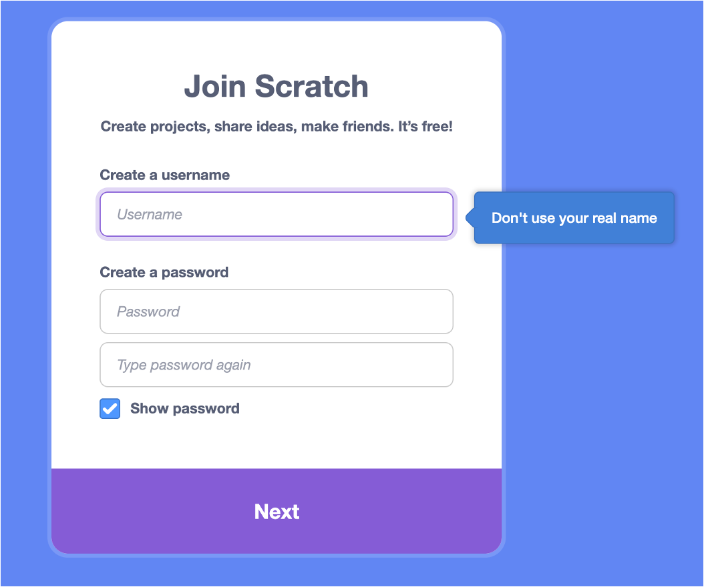

Scratch 1 Class - Guided Exercise
Lesson 1 Guide
Vocabulary:
- Sprite: The cat in Scratch – images on the screen are called sprites.
- Backdrop: Background in the workspace.
- Blocks: Blocks that contain the code, moving it into the workspace.
Blocks Used/Introduced Today:
-

When Flag Clicked - This code block listens for when the start is clicked.
-

Move ____ Steps - This code block moves a sprite left and right.
-

Forever Loop - This code block repeats code forever.
-

Rotate ___ Degrees - This code block rotates a sprite to the right by 15 degrees.
Exercise 1: Creating your First Program
In this exercise, you will learn how to write your first Scratch program!
Create your Account
First, create your Scratch account. Go to scratch.mit.edu. Once you are on the page, click "Join Scratch" on the top right hand corner of the page.

Next, click "Create" on the top left corner of the screen. You should now be in the Scratch code editor environment.
Scratch Basics
Scratch is a block-based programming language. Instead of typing text, you are simply dragging blocks to instruct the computer on what to do!
You should see the cat, which is known as the sprite. You should see blocks on the left hand side of the screen, and a big white box around the cat - this is the backdrop.
Your First Program
Let's create your first program. On your scratch editor, click the orange events button. Drag the block that says "when green flag clicked."
This block starts your code. To run any code, you click the green flag at the top right corner.
However, when you click the green flag, nothing happens. That is because there are no instructions for the computer to do when you start the program! Let's add some code.
Click "motion", the blue button, and drag the block that says "move 10 steps" into the environment.
Now, click the green flag. What happened? Did the cat move? If so, congratulations, you have written your first program!
Exercise 2: Moving the Sprite
In this exercise, you will learn how to modify your first program!
In your first program, your sprite moved very little. In this exercise, you will learn how to do more than that!
Changing Direction
Notice how the in the block "move 10 steps", the number 10 is enclosed in a white circle. Anytime in scratch where you have a round circle with a number, you can change that value.
Let's change that number to a bigger number. Observe what happens!
Change that number to a negative number. Observe what happens!
Adding a Forever Loop
We can improve the program even further by adding a "forever" loop.
As it suggests, any code inside the loop, will execute "forever"
Observe what happens now!
Exercise 3: Rotating the Sprite
In this exercise, you will learn how to rotate and change the direction of sprites.
In your last program, you could make your sprite move horizontally. In this exercise, you will learn how to make it move vertically and in all directions!
Changing Direction
Notice how the in the block "move 10 steps", the number 10 is enclosed in a white circle. Anytime in scratch where you have a round circle with a number, you can change that value.
Let's change that number to a bigger number. Observe what happens!
Change that number to a negative number. Observe what happens!
Adding a Forever Loop
We can improve the program even further by adding a "forever" loop.
As it suggests, any code inside the loop, will execute "forever"
Observe what happens now!
Homework:
-
Exercise 1: Race Two Sprites
- First, program your first sprite to move from one side of the backdrop to the other.
- Next, create a second sprite.
- Program the second sprite to move from one side of the backdrop to the other.
- Play around with the blocks to make one sprite move faster than the other!
-
Exercise 2: Dancing Cat
- For this exercise, use the blocks that you know to animate the sprite. Play around with the numbers and see what happens! Get creative with it.
-
Exercise 3: Treasure Hunt
- For this exercise, please draw this backdrop:

- Refer to this tutorial if needed: https://www.youtube.com/watch?v=CQ4SldacxG4
- Please program the sprite so that it will touch every “X”.